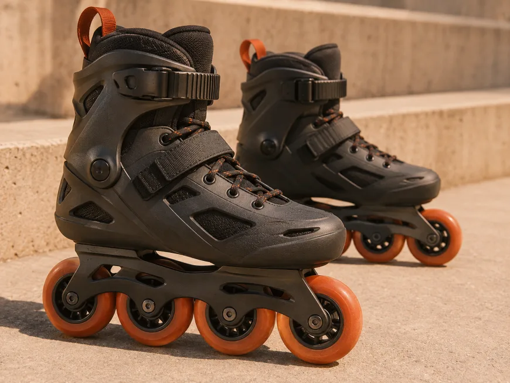

Voltar aos modelos
Patins inline
Rodas em linha para praticar em uma área plana e autorizada.
Modelo de referência: Oxelo FIT100. Teste complementar.
Preços de teste
Escolha um pacote para ver o total conforme a quantidade.
Incluído na proposta. Um par, capacete, joelheiras, cotoveleiras e munhequeiras.
Antes de operar. Par na numeração correta, teste do freio e confirmação do local.